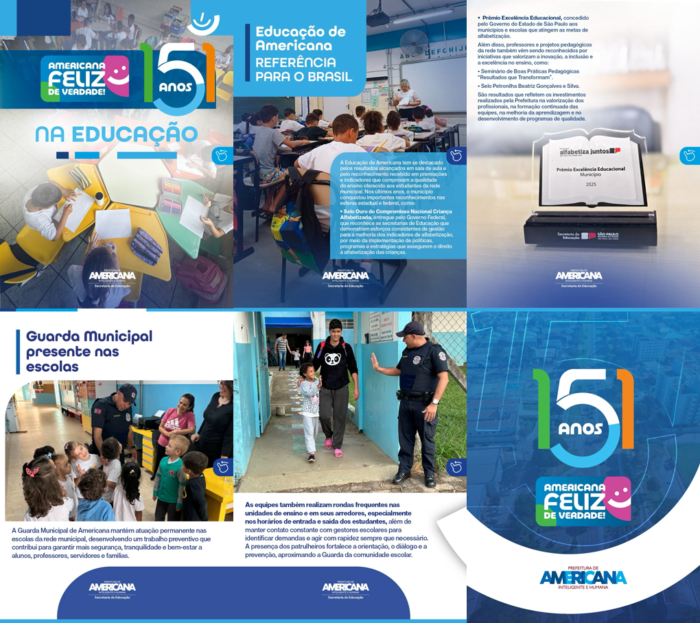
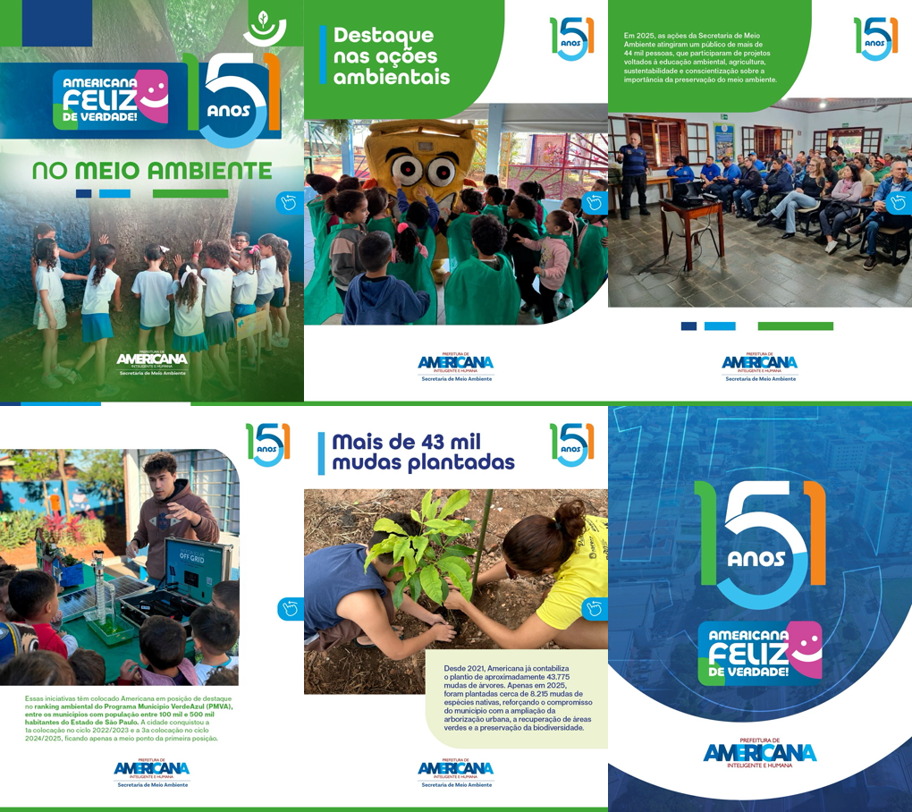
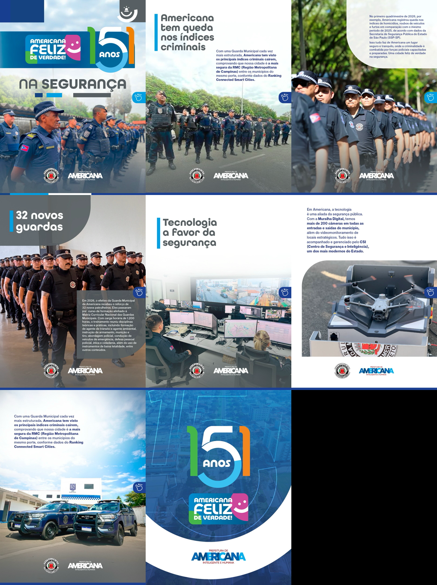
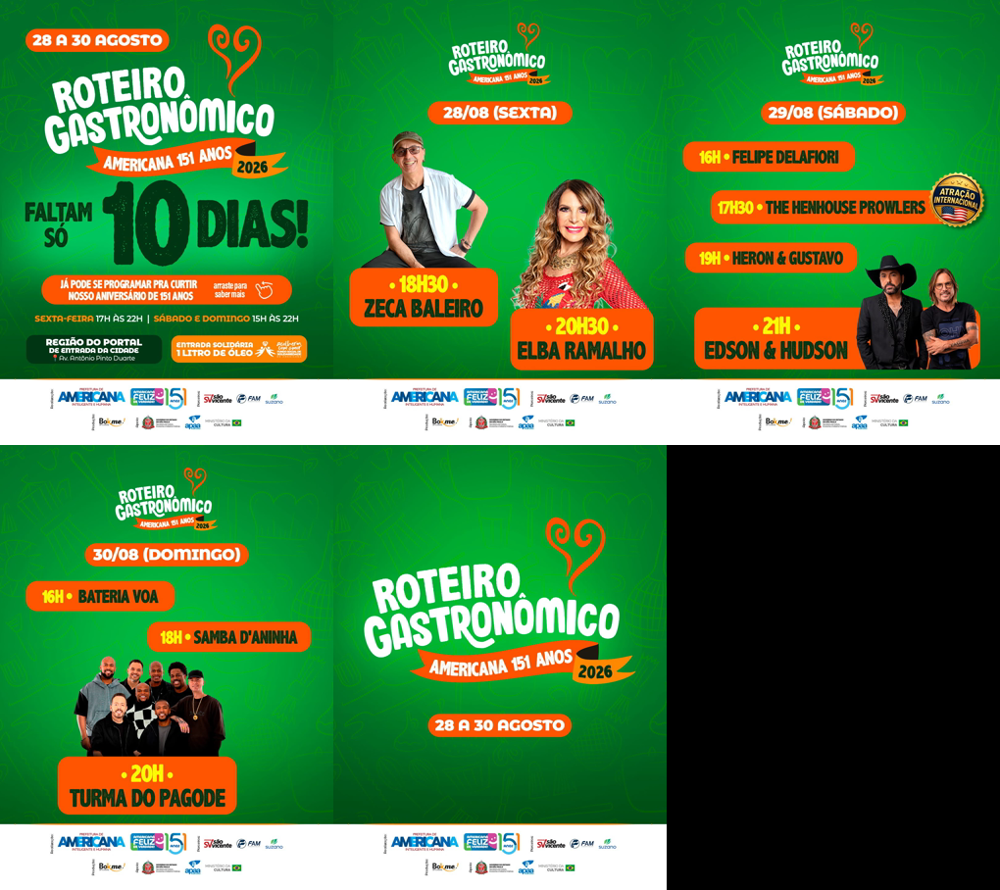
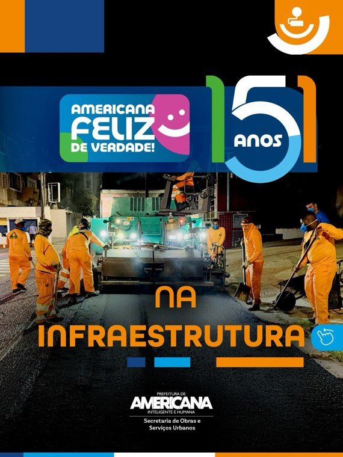
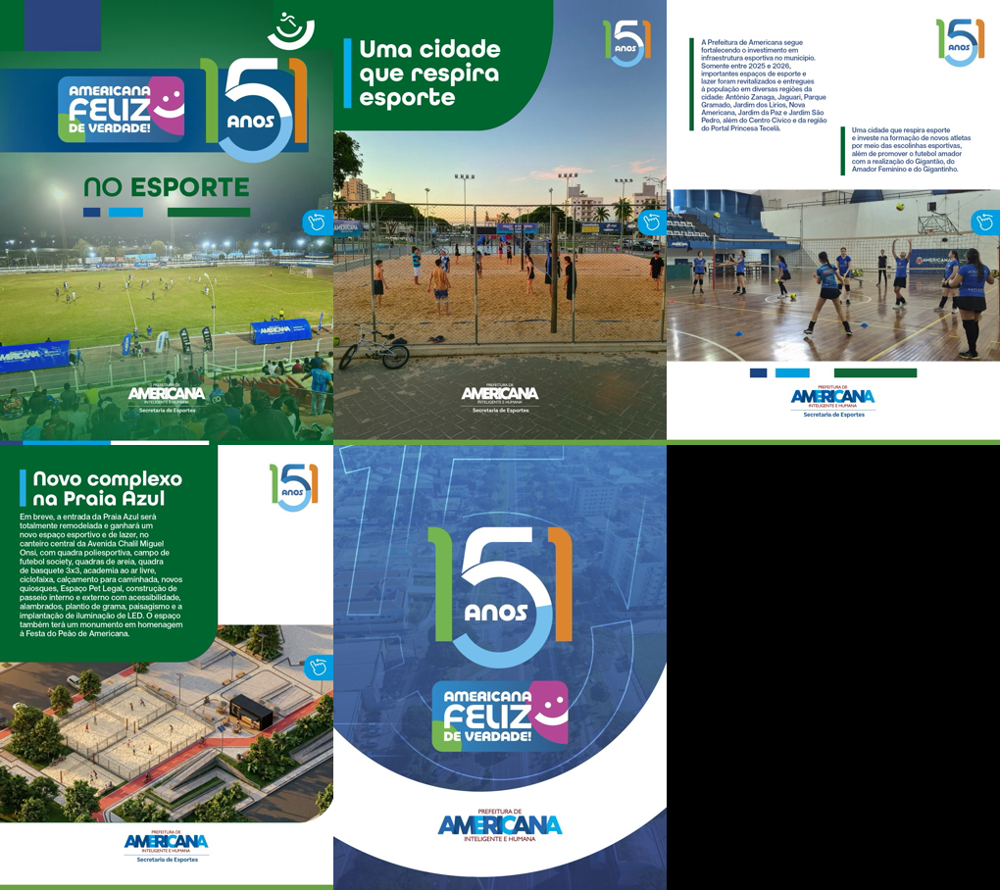

Campanha Temas Diversos · Agosto 2026
Prefeitura de Americana
O calendário de agosto reuniu quase todas as áreas da gestão ao mesmo tempo: a infraestrutura, com o programa Asfalto Novo avançando bairro a bairro; a saúde, com as obras das novas UBS e os mutirões de atendimento; o concurso 7 Maravilhas de Americana, com a votação aberta durante boa parte do mês; o Roteiro Gastronômico 2026; e os 151 anos da cidade, celebrados em 27 de agosto. A veiculação correu de 01 a 28 de agosto, em Meta Ads e YouTube.
7 Maravilhas foi a peça que mais fez a cidade responder, concentrando a maior parte da conversa escrita do mês, e Feliz de Verdade na Infra foi a que mais abriu alcance novo. As cinco linhas contratadas para agosto fecharam o ciclo acima do volume combinado.
Distribuição percentual do plano contratado entre as cinco linhas, conforme planejamento e orientação do cliente.
| Linha | % do plano | Valor | Meta contratada |
|---|---|---|---|
| Meta Ads · Impressões | 30% | R$5.400,00 | 540.000 |
| Meta Ads · Engajamento | 5% | R$900,00 | 3.600 |
| Meta Ads · Visualização | 22,5% | R$4.050,00 | 16.200 |
| Meta Ads · Visualização (público que já assistiu) | 17,5% | R$3.150,00 | 10.500 |
| YouTube · Visualização | 25% | R$4.500,00 | 18.000 |
| Total | 100% | R$18.000,00 |
As três peças que definiram o ciclo, vistas uma a uma, com o que funcionou, o ponto de atenção, a resposta do público e a leitura de audiência e posicionamento.
Top 3 de vídeo assistido, comentários e compartilhamentos, com o número absoluto e a taxa de cada entrada.
Dez peças no ar ao longo do mês, cobrindo infraestrutura, saúde, educação, meio ambiente, segurança, esporte, cultura e gastronomia.
Agosto foi um mês de vitrine ampla. Em vez de concentrar a comunicação em uma ou duas frentes, o plano colocou quase todas as áreas da Prefeitura em circulação ao mesmo tempo, com peças de vídeo longo apresentadas em estúdio e cartões de serviço no feed. Isso deu ao ciclo um retrato bastante completo do que a população respondeu tema por tema.






O que cada plataforma registrou no período de 01 a 28 de agosto, apurado direto na fonte de cada uma.
| Métrica | Volume |
|---|---|
| Impressões | 748.846 |
| Alcance (conta) | 554.109 |
| Frequência | 1,35 |
| Cliques | 3.659 |
| CTR | 0,49% |
| Engajamento | 13.920 |
| Visualização de vídeo | 36.003 |
| Métrica | Meta | Entregue |
|---|---|---|
| Visualizações | 18.000 | 20.143 |
As visualizações de vídeo das duas plataformas somam as 56.146 registradas no ciclo: 36.003 no Meta Ads e 20.143 no YouTube.
O alcance informado é o dado deduplicado da conta, nunca a soma das linhas de veiculação. A mesma pessoa costuma ser exposta a mais de uma linha no mesmo período e é contada uma única vez no total da conta.
Distribuição das impressões por faixa de idade e por gênero, apurada na plataforma.
Uma parte relevante da entrega chega sem gênero declarado no perfil. Esse grupo aparece separado e não é redistribuído entre os outros dois.
| Faixa | Feminino | Masculino | Não informado | Total |
|---|---|---|---|---|
| 18 a 24 | 78.941 | 63.146 | 97.365 | 239.452 |
| 25 a 34 | 48.106 | 44.011 | 83.360 | 175.477 |
| 35 a 44 | 28.451 | 25.370 | 26.327 | 80.148 |
| 45 a 54 | 29.252 | 23.040 | 11.434 | 63.726 |
| 55 a 64 | 42.495 | 27.124 | 3.005 | 72.624 |
| 65 ou mais | 78.637 | 36.246 | 2.458 | 117.341 |
| Total | 305.882 | 218.937 | 223.949 | 748.768 |
A faixa de 18 a 24 anos concentrou o maior volume do mês, com 239.452 impressões, seguida da faixa de 25 a 34, com 175.477. Na outra ponta, a faixa de 65 anos ou mais recebeu 117.341 impressões, mais que 35 a 44 e 45 a 54 somadas, puxada pelas peças de vídeo com apresentador. Em todas as faixas de idade, o público feminino recebeu mais impressões que o masculino: 305.882 contra 218.937.
Cruzamento entre as pautas que a campanha veiculou e o que a imprensa independente de Americana noticiou no mesmo período.
A imprensa de Americana se concentrou na virada do mês, em torno dos 151 anos da cidade, do resultado das 7 Maravilhas e da abertura do Roteiro Gastronômico. É exatamente a janela em que a campanha mantinha essas pautas no ar.
O dia de maior movimento foi 27 de agosto, aniversário de 151 anos de Americana, que reuniu a solenidade no Paço, o anúncio dos vencedores das 7 Maravilhas e a véspera do Roteiro Gastronômico. Os três temas que a imprensa registrou na clipagem têm uma característica em comum: todos têm data marcada.
Estão reproduzidas acima as publicações com título, data e link conferidos um a um na página de origem, nos veículos Liberal e Todo Dia.
Dez pautas no ar entre 05 e 28 de agosto, todas as linhas contratadas cumpridas e um retrato bastante claro de quais temas a cidade acompanha em silêncio e quais ela responde.
O que a leitura de agosto sugere para o trabalho de comunicação da Prefeitura.
Dados obtidos diretamente da API do Meta Ads, na conta da Prefeitura de Americana, e do Google Ads para a campanha de YouTube, com granularidade por campanha e por anúncio, no período de 01 a 28 de agosto de 2026.
Metas por linha conforme contratado com a Prefeitura para o ciclo de agosto, conferidas uma a uma contra a entrega apurada na plataforma.
Recorte de impressões por idade e por gênero extraído da própria plataforma de mídia. A soma por faixa fica em 748.768 impressões, pequena diferença para o total da conta por causa de registros sem faixa apurada.
Peças vistas diretamente, vídeo por vídeo e cartão por cartão, com leitura dos comentários públicos de cada publicação. A análise é qualitativa e acompanha os números de entrega de cada peça.
Clipagem dos veículos independentes Liberal e Todo Dia no período, com título, data, veículo e link de cada registro reproduzidos como publicados na fonte original. As publicações do canal oficial da Prefeitura ficaram fora deste recorte.
Nenhum número deste relatório foi estimado. Cada dado é rastreável à sua fonte original, plataforma de mídia ou publicação de imprensa, e foi conferido antes da publicação. As leituras qualitativas de criativo estão sempre identificadas como tal e separadas dos números apurados.